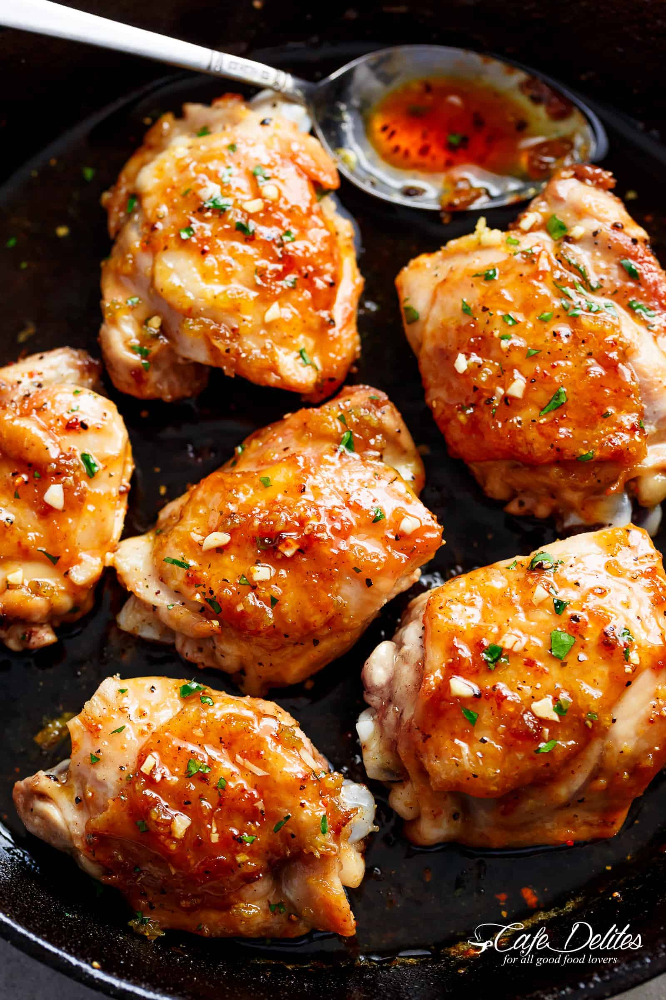

Easy Honey Garlic Chicken

This super-simple recipe makes a crisp-tender chicken with a perfect, sticky glaze.
With a recipe that includes both chicken thighs AND chicken breasts, you’re just minutes away from the most addictive Honey Garlic Chicken dinner the whole family loves! The perfect meal to have when you feel like eating something sweet with a hint of savoury.
Ingredients
- 6 chicken thighs, bone in or out, with or without skin
- Salt and pepper, to season
- 2 teaspoons garlic powder, to season
- 6 cloves garlic, crushed
- 1/3 cup honey
- 1/4 cup water (or chicken broth)
- 2 tablespoons rice win vinegar (or apple cider vinegar, or any white vinegar)
- 1 tablespoon soy sauce
Instructions
- Season chicken with salt, pepper and garlic powder;set aside.
- Heat a pan or skillet over medium high heat; sear chicken thigh fillets or breast fillets on both sides until golden and cooked through
For bone in thighs:
- Reduce heat after searing on both sides, cover skillet with a lid and continue cooking until the chicken is cooked through, while turning every 5 minutes until done. Alternatively, see notes for oven method.
- Drain most of the excess oil from the pan, leaving about 2 tablespoons of pan juiced for added flavour.
For sauce:
- When chicken is done and cooked through, arrange chicken skin-side up in the pan (if cooking with skin); add the garlic between the chicken and fry until fragrant (about 30 seconds). Add the honey, water, vinegar and soy sauce. Increase heat to medium-high and continue to cook until the sauce reduces down and thicken slightly (about 3-4 minutes).
- Garnish with parsley and serve over vegetables, rice, pasta or with a salad.
NOTES
- *For chicken breasts: use 3 breasts, sliced horizontally in half. Sear breast fillets on each side until golden and cooked through (about 6 minutes per side, depending on the thickness of your fillets). Continue directions from the sauce, onwards.**For oven baked, bone-in thighs: Preheat oven at 400°F or 200°C. Sear chicken in an oven proof skillet or pan, skin side down first for 3 minutes. Flip and sear for a further 3 minutes until browned each side. Then bake in the oven for a further 20-25 minutes, until completely cooked through and no longer pink inside. Continue directions from the sauce, onwards.